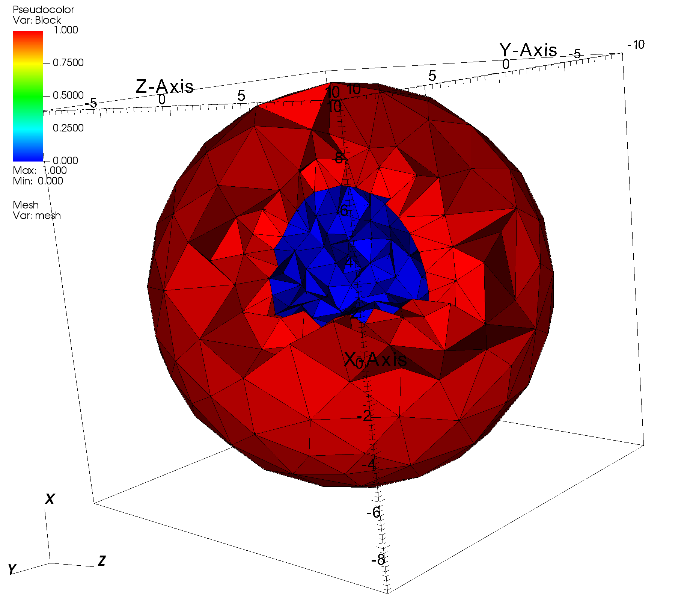
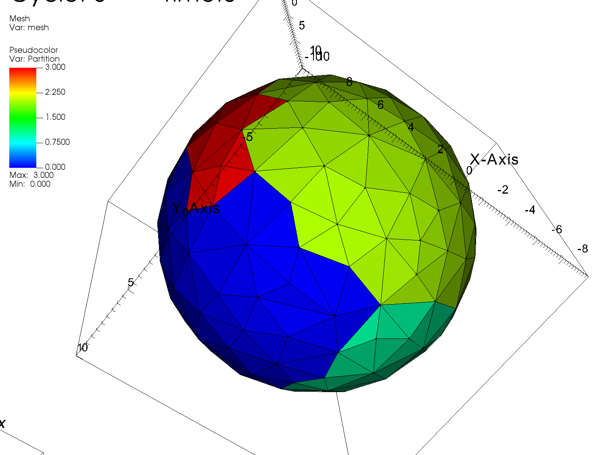

1.5. Reading a 3D gmsh file
Reading a 3D .msh file with material IDs and boundary IDs. The unstructured mesh was created using the gmsh Mesh Generator.
To run the code, simply type: jupyter nbconvert --to python --execute <basename>.ipynb.
To convert it to a python file (named <basename>.py), simply type: jupyter nbconvert --to python <basename>.ipynb
To run the python file from the terminal, using N processes, simply type: mpiexec -n <N> python <basename>.py
[ ]:
import os
import sys
from mpi4py import MPI
sys.path.append("../..")
from pyopensn.mesh import FromFileMeshGenerator, PETScGraphPartitioner
from pyopensn.context import UseColor, Finalize
UseColor(False)
1.5.1. Mesh and Partition
We use the FromFileMeshGenerator and pass the path to the msh file.
We also partition the 3D mesh into 4 subdomains using Parmetis (by running using mpiexec -n 4 ...).
Finally, we export the mesh to a VTU file.
[ ]:
meshgen = FromFileMeshGenerator(
filename="./two_spheres_small.msh",
partitioner=PETScGraphPartitioner(type='parmetis'),
)
grid = meshgen.Execute()
# Export
grid.ExportToPVTU("Read_3D_gmsh")
1.5.2. Visualization
The resulting mesh and material layout is shown below:

When using the Parmetis partitioner and 4 MPI ranks, we obtain:

1.5.3. Finalize (for Jupyter Notebook only)
In Python script mode, PyOpenSn automatically handles environment termination. However, this automatic finalization does not occur when running in a Jupyter notebook, so explicit finalization of the environment at the end of the notebook is required. Do not call the finalization in Python script mode, or in console mode.
Note that PyOpenSn’s finalization must be called before MPI’s finalization.
[ ]:
from IPython import get_ipython
def finalize_env():
Finalize()
MPI.Finalize()
ipython_instance = get_ipython()
if ipython_instance is not None:
ipython_instance.events.register("post_execute", finalize_env)